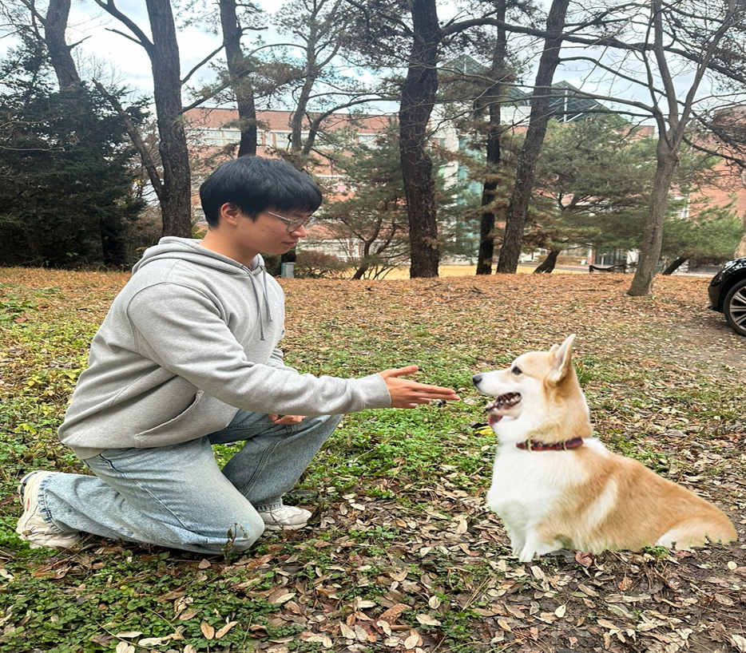

안녕하세요.
㈜아울컴퍼니 대표 오세울입니다.
많은 분이 반려견과 살아가고 있습니다.
어떤 반려견은 가족으로 어떤 반려견은 움직이는 봉제인형으로…
안타깝게도 사람들은 반려견이 자신의 생활을 방해한다고 느꼈을 때 교육을 하려 합니다.
시끄럽게 짖어서 민원이 들어왔을 때,
배변을 아무 곳에나 하고 다닐 때,
보호자와 한시도 떨어지지 못하는 반려견을 볼 때…
우리는 단지 이런 반려견의 행동을 멈추고 싶어 합니다.
왜 짖는 행동을 하게 되었는지
왜 사람을 물 수밖에 없었는지
지금 하는 소변의 의미는 어떤 것인지 생각해보셨나요?
아울교육에서는 짖는 행동을 문제라고 하지 않고
짖게 하였던 마음이 문제라고 합니다.
그럴 수밖에 없었던 반려견의 상황을 생각합니다.
그들은 입양 온 순간부터 한시도 빼놓지 않고 자신의 감정상태를 보호자에게 알리고 있었지만
그 신호는 항상 무시되어왔을 겁니다.
끝내, 짖거나 무는 등 보호자가 알아듣기 쉬운 방법으로
그 마음을 표현하게 되었을 때 우리는 그것을 ‘문제행동’이라고 합니다.
그런 행동을 하는 반려견의 마음 상태는 온전할 수 없습니다.
반려견의 행동을 멈추겠다고 초크체인을 쓰고
강압적인 리더십으로 제압하고, 서열을 강조하는 교육은
사랑하는 반려견과의 관계만 망치고 말 겁니다.
그렇다고 아울이 무조건 칭찬만 하는 교육을 하진 않습니다.
때로는 거절을 통해 옳고 그른 행동을 알려주어, 우리가 사는 이 복잡한 도시환경에 적응하여
함께 어울려 살아갈 수 있는 교육을 아울교육이라고 말합니다.
아울교육은 보호자님과 반려견이 항상 행복하기를 바랍니다.
|
ddddddddddd |
 |